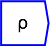
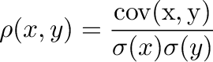

Next: Linear Regression
Up: Statistical Operations
Previous: Covariance
Contents
Correlation coefficient 

The operator can be placed on the canvas in two ways:
- From the Statistics (``statistics'') toolbar
 ;
or
;
or
- By typing the letters ``correlation'' on the canvas and then pressing
the Enter key
See covariance for the interpretation of tensor valued
arguments. The correlation coefficient is defined as
